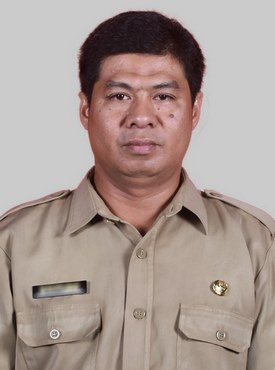
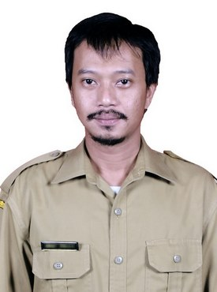
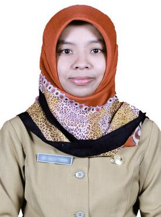
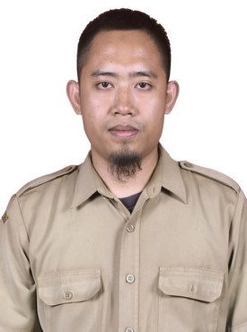
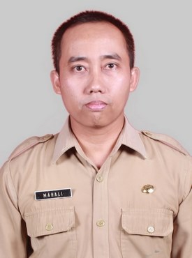
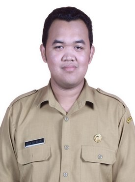
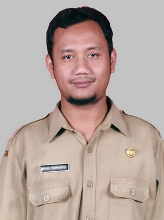

Kepala Jurusan
Ali Latief M.T.
Penanggung jawab jurusan RPL
Jurusan Rekayasa Perangkat Lunak (RPL) di SMKN 5 Malang dibuka untuk merespons pesatnya perkembangan teknologi dan industri kreatif. Sebagai bagian dari sekolah vokasi yang berdiri sejak 1998, program ini dirancang untuk mencetak programmer dan ahli perangkat lunak yang kompeten.Latar belakang dan perjalanan jurusan RPL di SMKN 5 Malang meliputi:Pendirian Jurusan: Dibuka sebagai bagian dari langkah adaptasi sekolah untuk mencukupi kebutuhan Sumber Daya Manusia (SDM) di sektor teknologi informasi.Pembelajaran Komprehensif: Menerapkan pendekatan berbasis kompetensi dan produksi. Siswa tidak hanya belajar teori, tetapi juga praktik langsung yang disesuaikan dengan standar Dunia Usaha dan Dunia Industri (DUDIKA).Fokus Kurikulum: Siswa dibekali keterampilan meliputi algoritma, pemrograman (seperti Java, C++, Python), basis data, desain UI/UX, hingga rekayasa gim dan web.Kualitas Teruji: Mengikuti standar akreditasi "A" (Amat Baik) yang disandang oleh seluruh kompetensi keahlian di SMKN 5 Malang sejak tahun 2008
SMKN 5 Malang resmi didirikan berdasarkan Surat Keputusan Menteri Pendidikan dan Kebudayaan Nomor 13a/O/1998 di lahan seluas 13.816 m².
Jurusan RPL dibuka sebagai respons sekolah terhadap pesatnya perkembangan teknologi dan digital. Fokus kurikulumnya mencakup pemrograman berbasis desktop, web, dan mobile.
Seluruh kompetensi keahlian di SMKN 5 Malang, termasuk RPL, berhasil meraih akreditasi "A" (Amat Baik) dari Badan Akreditasi Nasional Sekolah/Madrasah.
Jurusan RPL terpilih dan dipercaya menerima program "SMK Coding", yakni program pelatihan bersertifikat dari pemerintah untuk mengakselerasi keterampilan pemrograman siswa.
Perkenalkan guru pengajar RPL dengan pengalaman di bidang pemrograman, basis data, dan sistem informasi.

Penanggung jawab jurusan RPL

Pengajar Pemrograman

Pengajar Basis Data & Figma

Pengajar Sistem Informasi

Pengajar Pemrograman Dasar

Pengajar Web-akubisa.id

Pengajar Desain UI/UX
Contoh karya RPL dalam bentuk foto dengan judul dan deskripsi singkat.

Contoh aplikasi web yang dikembangkan siswa untuk kampus digital.

Desain antarmuka dan dashboard aplikasi untuk pengguna.

Proyek aplikasi dan dokumentasi tugas akhir siswa RPL.